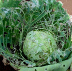
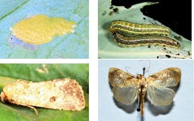

| Home |
| CRUCIFEROUS VEGETABLES |
MAJOR PESTS |
| 1. Diamond back moth |
| 2. Leaf webber |
| 3. Cabbage semilooper |
| 4. Cabbage butterfly |
| 5. Cabbage borer |
| 6. Mustard sawfly |
| 7. Cabbage aphid |
| 8. Cabbage flea beetle |
| Questions |
| Download Notes |
CRUCIFEROUS VEGETABLES :: MAJOR :: LEAF WEBBER
2. Leaf webber: Crocidolomia binotalis (Pyraustidae : Lepidoptera)
Distribution and status: Regular pest of minor status but occasionally reach serious proportions
Host range: Cabbage, radish, mustard and other cruciferous plants.
Damage symptoms
| Young larva feeds gregariously on leaves, later webs together the leaves and feeds. Due to gregarious feeding, rotting of cabbage heads and cauliflower curds are common. Regular pest of minor status but occasionally turn to serious proportions. |  |
Bionomics
Female moth lays 40-100 eggs on underside of the leaves. Egg period 5-15 days. Larva: with red head, brown longitudinal stripes and rows of tubercles on its pale violet body. Larval period 24-50 days. Pupates in soil, pupa is an earthen cocoon. Pupal period 14-40 days. Adult: Small pale brown with forewing having distinct wavy lines and prominent wavy spots. Hind wings semi-hyaline. Life cycle is completed in 43-82 days. More than one generation may be completed in the season.
|  |
Management
- Spray phosalone 50 EC 1.0 L, fenvalerate 20 EC or cypermethrin 10 EC or deltamethrin 28 EC 250 ml, cartap hydrochloride 50 SP 500 ml, spinosad 45 SC 125 ml/ha or azadirachtin 0.03% 2.5-5.0 L/ha. Do not repeat the insecticides with similar mode of action.
- The pest is regulated by two larval parasitoids viz., Microbracon mellus and Apanteles crocidolmiae